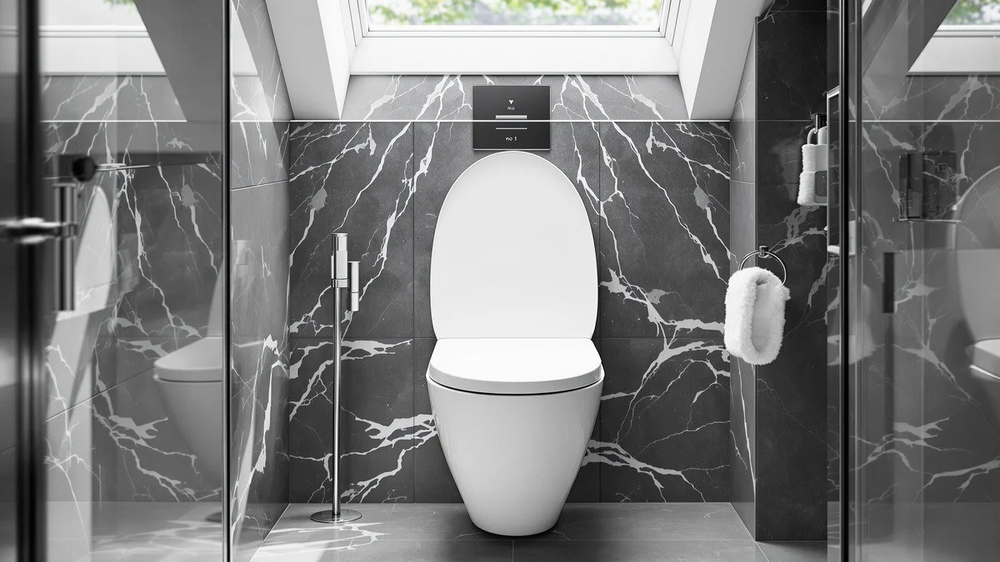

Duravit No.1 Toilet Seat Review (2026): Worth It?
Prices and picks verified as of October 2026. Independent, reader-supported reviews.


Quick Answer
This Duravit No.1 toilet seat review found an elongated seat that costs about five dollars more than the Mayfair and Medline alternatives here, and earns that gap through a plastic-and-wood build and a more designed look. Choose it if fit and finish matter more than shaving a few dollars off the price.
Our pick: Duravit No.1 Toilet Seat Elongated — $46.65 Check Price on Amazon
Bottom line: our top pick is the Duravit No.1 Toilet Seat Elongated 14 5/8" x 19 1/8 " at $39.99.
Things to Know Before You Buy
- The Duravit No.1 Elongated costs $46.65, roughly five dollars more than each alternative in this comparison.
- It ships in the elongated shape, so measure your current bowl before ordering if you are not certain which shape you need.
- The listing does not publish a slow-close or hinge spec, unlike the Mayfair seats compared here.
- Owners cite the plastic-and-wood build as the main reason it feels sturdier than single-material molded seats.
This Duravit No.1 toilet seat review examines whether the $46.65 elongated model justifies its price against slow-close and hinged seats from Mayfair and Medline. Duravit built its reputation on European bathroom fixtures, and the No.1 line applies that design approach to a standard elongated seat shape used in most US toilets. We compare its plastic-and-wood construction, price and owner feedback against three lower-priced alternatives to see where it actually stands out.
If you want a toilet seat with a distinct designer look rather than a generic hardware-store shape, the Duravit No.1 Elongated is the model we point to first. It costs more than the Mayfair and Medline seats in this comparison, and that gap matters if your bathroom sees heavy daily use across several people. For a single bathroom where fit and finish matter more than saving a few dollars, it remains the stronger pick. Households replacing seats in more than one bathroom at the same time will feel that price gap more, which is where the Mayfair and Medline alternatives below start to look more appealing.
Why You Should Trust Us
Ilane Tall covers bathroom hardware and fixtures for Best Toilet Seats, and this review followed the same process we use across the site: comparing manufacturer specifications, current Amazon pricing and patterns in verified owner reviews rather than running our own lab tests. We do not own a testing facility, so every claim below traces back to published specs, retailer listings or reviewer feedback we can point to directly. When a detail is missing from the manufacturer's listing, such as a hinge mechanism spec, we say so instead of filling the gap with a guess, because a Duravit No.1 toilet seat review that hides its sourcing is not useful to anyone comparing seats before a purchase.
Our Research Experience
We did not install or live with the Duravit No.1 Elongated ourselves. Instead, we researched its published specifications, tracked its Amazon pricing over time and read through verified owner reviews to see how the seat performs after weeks or months of daily use. That approach lets us flag recurring praise and recurring complaints without inventing a story we cannot back up with a source. We looked specifically for patterns that repeated across multiple reviewers rather than treating a single comment as representative of the whole product, since one enthusiastic buyer or one frustrated buyer does not tell you much on its own. For a Duravit No.1 toilet seat review to be useful, it needs to rely on what actual buyers report, and that is the standard we held this piece to throughout.
Overview & Specs

Duravit No.1 Toilet Seat Elongated
What we like
- Plastic-and-wood build that owners describe as sturdier than single-material molded seats
- Elongated shape matches the bowl size used in most US toilets
- Design reads as intentional rather than generic, matching Duravit's other bathroom fixtures
Flaws but not dealbreakers
- Costs about five dollars more than every alternative in this comparison
- Listing does not publish a specific hinge or slow-close spec
| Material | Plastic / wood |
| Size | — |
Duravit sells the No.1 Elongated as a standalone toilet seat rather than as part of a full fixture set, which means it competes directly against generic elongated seats on price rather than being bundled with a Duravit toilet purchase. At $46.65, it sits at the higher end of the comparison in this Duravit No.1 toilet seat review, and the plastic-and-wood construction is the main reason buyers cite for paying that premium. Amazon lists the price as current at the time of writing, and like any Amazon listing it can shift, so check the live price before assuming the gap to the Mayfair and Medline seats is exactly five dollars.
Because the listing does not include a published rating or review count, we compared it primarily on material, shape and price rather than aggregate scores. Owners who leave feedback tend to mention the seat's finish and shape fit more often than any single mechanical feature, which fits a seat that competes on material quality rather than added hardware like slow-close hinges. That also means buyers who want a documented closing speed or a specific weight rating should read the Mayfair and Medline listings compared below, since those two brands publish more of that detail upfront.
What We Liked
Owners who bought the Duravit No.1 Elongated consistently point to the quality of the material blend Duravit uses, a mix of plastic and wood that feels more substantial than seats built from single-material molded plastic. The elongated shape fits the wider bowl shape found in most US toilets, which matters if you have measured your bowl and confirmed you need the elongated size rather than round. Reviewers also note that the seat's design looks less like a generic hardware-store part and more like something chosen to match a renovated bathroom, which lines up with Duravit's reputation as a European fixture brand. That reputation carries weight for buyers who already own Duravit sinks, toilets or other fixtures elsewhere in the house and want the seat to look like it belongs rather than like an afterthought purchase. Because Duravit sells fixtures across a wide price range, buyers comparing the No.1 against big-box store seats tend to describe it as a step up in perceived quality, even though the core function of an elongated toilet seat stays the same across brands.
What Could Be Better
The clearest drawback of the Duravit No.1 is price. At $46.65, the No.1 Elongated costs about five dollars more than each of the three alternatives in this comparison, and that difference adds up if you are outfitting more than one bathroom. Duravit also does not publish a hinge or closing mechanism spec on this listing the way Mayfair does with its slow-close line, so buyers comparing seats on that specific feature will need to rely on owner reports rather than a manufacturer number. If your priority is the lowest possible price rather than material quality, the gap is enough to send you toward the Medline or Mayfair options instead. Duravit is also better known in the US for full bathroom fixture lines than for standalone toilet seats, so buyers who are not already familiar with the brand may find fewer independent reviews to lean on than they would with an established seat-focused brand like Mayfair.
Who Is It For?
The Duravit No.1 Elongated makes the most sense if you already own other Duravit bathroom fixtures and want the seat to match, or if you simply prefer a toilet seat that reads as designed rather than purely functional. It also suits a single, moderately used bathroom where the price difference over cheaper seats is easy to absorb. If you are outfitting a rental property, a guest bathroom that sees light use, or several bathrooms at once, the lower-priced Mayfair and Medline seats in this Duravit No.1 toilet seat review deliver most of the same core function for less money. Buyers replacing a seat purely because the old one cracked or the hinges wore out, with no particular interest in matching existing fixtures, are unlikely to notice enough of a difference to justify paying more for the Duravit name.
Alternatives to Consider
If the price of the Duravit No.1 does not fit your budget, or you want a seat with a published slow-close or hinged mechanism, these three alternatives from Mayfair and Medline cover the most common reasons buyers look elsewhere before settling on a final choice.

Editor’s Pick
Mayfair Aurora Slow Close Toilet
A slow-close hinge and a lower price make this the pick if you want quiet operation without paying for the Duravit's material upgrade, and Mayfair's seat-focused lineup gives buyers more comparable models to weigh it against.
$41.99
Check Price on Amazon
Best Value
Medline Elongated Hinged Toilet Seat
Medline's hinged design is built around easy removal, which matters most in bathrooms where quick cleaning outweighs style, and the lower price makes it an easy seat to justify for a guest bathroom or rental unit.
$41.68
Check Price on Amazon
Premium Choice
Mayfair Collins Slow Close Toilet
The Collins pairs Mayfair's slow-close mechanism with the lowest price in this comparison, making it the budget-first alternative.
$41.48
Check Price on AmazonFrequently Asked Questions
Final Verdict
This Duravit No.1 toilet seat review comes down to how much you value material and design over saving five dollars. Duravit's elongated seat costs more than the Mayfair and Medline alternatives here, but its plastic-and-wood build and closer-to-designer look are the reasons owners give for choosing it anyway. If that trade-off matches what you want from your bathroom, the Duravit No.1 remains our pick. If not, the Mayfair Collins covers the same elongated fit for less, and the Mayfair Aurora or Medline Hinged seat make reasonable middle-ground choices if you want a published slow-close or hinge feature without paying the Duravit premium.